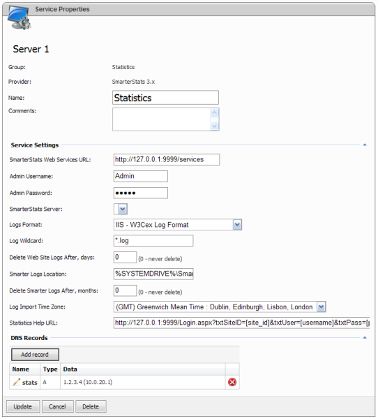

SmarterStats Provider Settings

- SmarterStats Web Services URL - Specify the URL to SmarterStats web services. This URL is the URL of SmarterStats web interface + "/services" path.
- Admin Username and Admin Password - Specify SmarterStats administrator username and password to access SmarterStats web services.
- SmarterStats Server - Select SmarterStats statistics server where statistics sites will be created. If the list of servers is empty verify/change web services URL, username and password, then save service properties and open service properties page again.
- Log Format - Select log format to be parsed. We recommend setup w3c extended log format for your web sites as it is most popular logs format on Windows systems.
- Log Wildcard - Specify the wildcard for log files to be analyzed by SmarterStats.
- Delete Web Site Logs After - Specify "Delete Web Site Logs after" field value which means SmarterStats will be deleting (purging) web site raw logs older than the specified number of days.
- Smarter Logs Location - Specify the location for parsed internal SmarterStats logs.
- Delete Smarter Logs After - Specify "Delete SmarterStats Logs" field value which means SmarterStats will be deleting his own internal parsed logs older than the specified number of days.
- Log Import Time Zone - Specify the default time zone for raw web site log files.
Statistics Help URL
Specify URL for viewing statistics by your customers. This URL will be shown to your customers in the list of statistics sites.
To allow autologin you can specify the following "Statistics URL" on SS service properties page:
Change SS URL to other applicable.
The following variables are supported in "Statistics URL":
-
[domain_name] - name of the statistics web site (domain)
-
[site_id] - numeric ID of SS site or name of statistics web site
-
[username] - for SS it is the username of the first user in the list, for AWStats it is WSP username of SS site owner
-
[password] - password of the user above